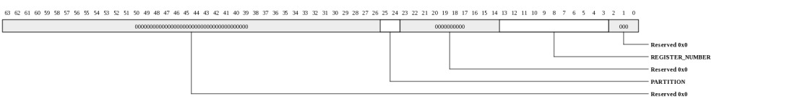
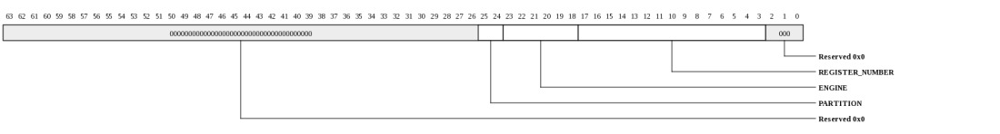
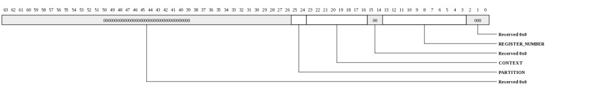
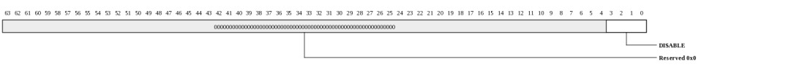
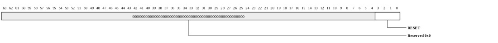
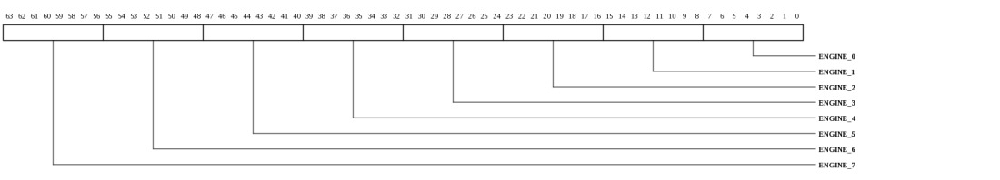

MiCA (0x0000-0x3000000) :
These registers provide global controls for the MiCA front-end.
Register Summary
General Address Space Definitions
MiCA Address Space (MICA_COMP_ADDRESS_SPACE: 0x0000-0x3ffffff)
The MMIO physical address space for MiCA configuration registers is described below. This is a general description of the MMIO space as opposed to a register description
| Bits | Name | Type | Reset | Description
| 25:24 | PARTITION | RW | 0 | This field selects Global Registers, Context User Registers, or Context System Registers. Note that the partitions are spaced 16 MB apart. If all of user partition is mapped into a 16 MB page, that page will not also include system partition.
| Value | Name | Meaning |
|---|
| 0 | DM_GLOBAL | Global configuration registers specific to MiCA. |
| 1 | ENGINE_GLOBAL | Global configuration registers for each Engine. Address [23:18] access the specific Engine and address [17:3] the register within the engine. |
| 2 | CONTEXT_USER | Context User configuration registers. |
| 3 | CONTEXT_SYSTEM | Context System configuration registers. |
|
| 23:0 | OFFSET | RW | 0 | Interpreted based on PARTITION. |
|
|---|
MiCA Address Space DM Global (MICA_COMP_ADDRESS_SPACE_GLOBAL: 0x0000-0x3fff)
This register defines the DM_GLOBAL address space. This is a general description of the MMIO space as opposed to a register description

| Bits | Name | Type | Reset | Description
| 25:24 | PARTITION | RW | 0 | DM_GLOBAL
| Value | Name | Meaning |
|---|
| 0 | DM_GLOBAL | Global configuration registers specific to MiCA. |
|
| 13:3 | REGISTER_NUMBER | RW | 0 | This field selects the specific global register. |
|
|---|
MiCA Address Space Engine Global (MICA_COMP_ADDRESS_SPACE_ENGINE: 0x1000000-0x1ffffff)
This register defines the ENGINE_GLOBAL address space. This is a general description of the MMIO space as opposed to a register description

| Bits | Name | Type | Reset | Description
| 25:24 | PARTITION | RW | 1 | ENGINE_GLOBAL
| Value | Name | Meaning |
|---|
| 1 | ENGINE_GLOBAL | Global configuration registers for each Engine. Address [23:18] access the specific Engine and address [17:3] the register within the engine. |
|
| 23:18 | ENGINE | RW | 0 | Engine select.
| Value | Name | Meaning |
|---|
| 0x0 | DEFLATE_ENGINE_IDX | Deflate engine select index |
| 0x1 | INFLATE0_ENGINE_IDX | Inflate0 engine select index |
| 0x2 | INFLATE1_ENGINE_IDX | Inflate1 engine select index |
|
| 17:3 | REGISTER_NUMBER | RW | 0 | This field selects the specific engine register. |
|
|---|
MiCA Address Space Context User (MICA_COMP_ADDRESS_SPACE_CTX_USER: 0x2000000-0x2ffffff)
This register defines the CONTEXT_USER address space. This is a general description of the MMIO space as opposed to a register description

| Bits | Name | Type | Reset | Description
| 25:24 | PARTITION | RW | 2 | CONTEXT_USER
| Value | Name | Meaning |
|---|
| 2 | CONTEXT_USER | Context User configuration registers. |
|
| 23:16 | CONTEXT | RW | 0 | Context select. |
| 13:3 | REGISTER_NUMBER | RW | 0 | This field selects the specific user context register. |
|
|---|
MiCA Address Space Context System (MICA_COMP_ADDRESS_SPACE_CTX_SYS: 0x3000000-0x3ffffff)
This register defines the CONTEXT_SYSTEM address space. This is a general description of the MMIO space as opposed to a register description

| Bits | Name | Type | Reset | Description
| 25:24 | PARTITION | RW | 3 | CONTEXT_SYSTEM
| Value | Name | Meaning |
|---|
| 3 | CONTEXT_SYSTEM | Context System configuration registers. |
|
| 23:16 | CONTEXT | RW | 0 | Context select. |
| 13:3 | REGISTER_NUMBER | RW | 0 | This field selects the specific system context register. |
|
|---|
Register Definitions
Device Info (MICA_COMP_DEV_INFO: 0x0000)
This register provides general information about the device attached to this port and channel.

| Bits | Name | Type | Reset | Description
| 35:32 | INSTANCE | RO | HW | Instance ID for multi-instantiated devices. |
| 27:24 | REGISTER_REV | RO | 0 | Register format architectural revision. |
| 23:16 | DEVICE_REV | RO | HW | Device revision ID. |
| 11:0 | TYPE | RO | 018h | Encoded device Type - 24 to indicate Compression Accelerator
| Value | Name | Meaning |
|---|
| 0x1 | PCIE | PCI Express Port |
| 0x10 | GBE | 10/100/1000 Mbps Ethernet |
| 0x11 | XGBE | 10 Gbps Ethernet |
| 0x13 | MPIPE | Multicore Programmable Intelligent Packet Engine |
| 0x14 | TRIO | Transaction IO Interface - used for read/write style interconnects such as PCI, PCIe, SRIO, and USB. |
| 0x16 | CRYPTO | MiCA for Crypto operations |
| 0x18 | COMPRESSION | MiCA for Compression operations |
| 0x20 | GPIO | GPIO Controller |
| 0x21 | RSHIM | General Chip Services |
| 0x22 | SROM | SROM Controller |
| 0x25 | I2CM | I2C Master |
| 0x26 | I2CS | I2C Slave |
| 0x28 | UART | UART |
| 0x29 | USBH | USB Host |
| 0x2a | USBS | USB Slave |
| 0x2b | USBHS | USB Host/Slave |
| 0x2c | MMC | Multi-Media Controller |
| 0x40 | DDR2 | DDR2 Controller |
| 0x42 | DDR3 | DDR3 Controller |
| 0x44 | DDR4 | DDR4 Controller |
| 0x80 | DIAG_SNP | Diagnostics memory snooper |
| 0x81 | IPIC | Interrupt Controller |
|
|
|---|
Device Control (MICA_COMP_DEV_CTL: 0x0008)
This register provides general device control.

| Bits | Name | Type | Reset | Description
| 3 | SDN_ROUTE_ORDER | RW | 0 | When 1, packets sent on the SDN will be routed x-first. When 0, packets will be routed y-first. This setting must match the setting in the Tiles. Devices may have additional interfaces with customized route-order settings used in addition to or instead of this field. |
| 2 | RDN_ROUTE_ORDER | RW | 1 | When 1, packets sent on the RDN will be routed x-first. When 0, packets will be routed y-first. This setting must match the setting in the Tiles. Devices may have additional interfaces with customized route-order settings used in addition to or instead of this field. |
|
|---|
MMIO Info (MICA_COMP_MMIO_INFO: 0x0010)
This register provides information about how the physical address is interpreted by the IO device. The PA is divided into {CHANNEL,SVC_DOM,IGNORED,REGION,OFFSET}. The values in this register define the size of each of these fields.

| Bits | Name | Type | Reset | Description
| 40:35 | REGION_WIDTH | RO | 0 | Size of the REGION field for this channel. The LSBs of the physical address are interpreted as {REGION,OFFSET} |
| 34:29 | OFFSET_WIDTH | RO | 16 | Size of the OFFSET field for this channel. The LSBs of the physical address are interpreted as {REGION,OFFSET} |
| 28:22 | NUM_SVC_DOM | RO | 0 | Number of service domains associated with this channel. |
| 21:19 | SVC_DOM_WIDTH | RO | 0 | Number of bits of service-domain specifier for this channel. The MSBs of the physical addrress are interpreted as {channel, service-domain} |
| 18:4 | NUM_CH | RO | 1 | Number of channels associated with this IO port. |
| 3:0 | CH_WIDTH | RO | 0 | Number of bits of channel specifier for all channels. The MSBs of the physical addrress are interpreted as {channel, service-domain} |
|
|---|
Memory Info (MICA_COMP_MEM_INFO: 0x0018)
This register provides information about memory setup required for this device.

| Bits | Name | Type | Reset | Description
| 55:48 | NUM_TLB_ENT | RO | 16 | Number of IO TLB entries per ASID. |
| 47:40 | NUM_ASIDS | RO | 40 | Number of ASIDS supported if this device has an IO TLB (otherwise this field is zero). |
| 35:32 | NUM_HFH_TBL | RO | 1 | Number of hash-for-home tables that must be configured for this channel. |
| 31:0 | REQ_PORTS | RO | 32768 | Each bit represents a request (QDN) port on the tile fabric. Bit[15] represents the QDN port used for device configuration and is always set for devices implemented on channel-0. Bit[14] is the first port clockwise from the port used to access configuration space. Bit[13] is the second port in the clockwise direction. Bit[16] is the first port counter-clockwise from the port used to access configuration space. When a bit is set, the device has a QDN port at the associated location. For devices using a nonzero channel, this register may return all zeros. |
|
|---|
Scratchpad (MICA_COMP_SCRATCHPAD: 0x0020)
Scratchpad

| Bits | Name | Type | Reset | Description
| 63:0 | SCRATCHPAD | RW | 0 | Scratchpad |
|
|---|
Semaphore0 (MICA_COMP_SEMAPHORE0: 0x0028)
Semaphore

| Bits | Name | Type | Reset | Description
| 0 | VAL | RW | 0 | When read, the current semaphore value is returned and the semaphore is set to 1. Bit can also be written to 1 or 0. |
|
|---|
Semaphore1 (MICA_COMP_SEMAPHORE1: 0x0030)
Semaphore

| Bits | Name | Type | Reset | Description
| 0 | VAL | RW | 0 | When read, the current semaphore value is returned and the semaphore is set to 1. Bit can also be written to 1 or 0. |
|
|---|
Clock Count (MICA_COMP_CLOCK_COUNT: 0x0038)
Clock Count

| Bits | Name | Type | Reset | Description
| 15:1 | COUNT | RO | 0 | Indicates the number of core clocks that were counted during 1000 device clock periods. Result is accurate to within +/-1 core clock periods. |
| 0 | RUN | RW | 0 | When 1, the counter is running. Cleared by HW once count is complete. When written with a 1, the count sequence is restarted. Counter runs automatically after reset. Software must poll until this bit is zero, then read the CLOCK_COUNT register again to get the final COUNT value. |
|
|---|
Engine Disable (MICA_COMP_ENGINE_DISABLE: 0x0040)
This Global register is used to disable engines, for debug and performance analysis. If all engines of a given type are disabled then no new operations for that type of function can be scheduled.

| Bits | Name | Type | Reset | Description
| 3:0 | DISABLE | RW | 0 | Each bit disables the corresponding Engine. When the Engine is disabled, any operations already assigned to the Engine will complete, and no new operations will be scheduled to that engine. |
|
|---|
Engine Reset (MICA_COMP_ENGINE_RESET: 0x0048)
This Global register is used to reset engines.

| Bits | Name | Type | Reset | Description
| 3:0 | RESET | RW | 0 | Each bit resets the corresponding Engine, and is for use if the Engine gets into a corrupted state (which normally won't happen). An engine should only be reset in one of two conditions - 1) it is not assigned to a Context, 2) if it is assigned to a Context, first reset the Context and then wait for it to go to the RESET_WAIT state. This bit also prevents scheduling new operations onto the engine, the same as if the ENGINE_DISABLE bit is set. |
|
|---|
MMIO HFH Table Init Control (MICA_COMP_HFH_INIT_CTL: 0x0050)
Initialization control for the hash-for-home table. This register is in global space because the HFH table is shared by all Contexts.

| Bits | Name | Type | Reset | Description
| 6:0 | IDX | RW | 0 | Index into the HFH table. Increments automatically on write or read to HFH_INIT_DAT. |
|
|---|
HFH Table Data (MICA_COMP_HFH_INIT_DAT: 0x0058)
Read/Write data for hash-for-home table

| Bits | Name | Type | Reset | Description
| 22:15 | TILEA | RW | HW | Tile that is selected when the result of the hash_f function is greater than or equal to FRACT |
| 14:7 | TILEB | RW | HW | Tile that is selected when the result of the hash_f function is less than FRACT |
| 6:0 | FRACT | RW | HW | Fraction field of HFH table. Determines what portion of the address space maps to TileA vs TileB. This register is in global space because the HFH table is shared by all Contexts. |
|
|---|
In Use Contexts (MICA_COMP_IN_USE_CONTEXTS_0: 0x0080)
These Global registers are used to provide the status of all Contexts. They can be used for monitoring and debug. There are 4 registers to cover 256 contexts, fewer contexts may be implemented in a given MiCA implementation, and those bits will read as 0.

| Bits | Name | Type | Reset | Description
| 63:0 | CTX_MASK | RO | 0 | Each bit indicates that the corresponding Context is not in IDLE state (see Status Register). This register covers contexts 0 to 63. |
|
|---|
In Use Contexts (MICA_COMP_IN_USE_CONTEXTS_1: 0x0088)
These Global registers are used to provide the status of all Contexts. They can be used for monitoring and debug. There are 4 registers to cover 256 contexts, fewer contexts may be implemented in a given MiCA implementation, and those bits will read as 0.

| Bits | Name | Type | Reset | Description
| 63:0 | CTX_MASK | RO | 0 | Each bit indicates that the corresponding Context is not in IDLE state (see Status Register). This register covers contexts 64 to 127. |
|
|---|
In Use Contexts (MICA_COMP_IN_USE_CONTEXTS_2: 0x0090)
These Global registers are used to provide the status of all Contexts. They can be used for monitoring and debug. There are 4 registers to cover 256 contexts, fewer contexts may be implemented in a given MiCA implementation, and those bits will read as 0.

| Bits | Name | Type | Reset | Description
| 63:0 | CTX_MASK | RO | 0 | Each bit indicates that the corresponding Context is not in IDLE state (see Status Register). This register covers contexts 128 to 191. |
|
|---|
In Use Contexts (MICA_COMP_IN_USE_CONTEXTS_3: 0x0098)
These Global registers are used to provide the status of all Contexts. They can be used for monitoring and debug. There are 4 registers to cover 256 contexts, fewer contexts may be implemented in a given MiCA implementation, and those bits will read as 0.
| Bits | Name | Type | Reset | Description
| 63:0 | CTX_MASK | RO | 0 | Each bit indicates that the corresponding Context is not in IDLE state (see Status Register). This register covers contexts 192 to 255. |
|
|---|
Scheduler 0 Control (MICA_COMP_SCHED_0_CTL: 0x0180)
For Crypto, this register controls memory-to-memory copy operations; for Zip it controls deflate engine operations.
| Bits | Name | Type | Reset | Description
| 63:0 | SCHED_0_CTL | RW | 0 | For Crypto, this register controls memory-to-memory copy operations; for Zip it controls deflate engine operations. |
|
|---|
Scheduler 1 Control (MICA_COMP_SCHED_1_CTL: 0x0188)
For Crypto, this register controls Kasumi and Snow operations; for Zip it controls inflate engine operations.
| Bits | Name | Type | Reset | Description
| 63:0 | SCHED_1_CTL | RW | 0 | For Crypto, this register controls Kasumi and Snow operations; for Zip it controls inflate engine operations. |
|
|---|
Scheduler 2 Control (MICA_COMP_SCHED_2_CTL: 0x0190)
For Crypto, this register controls Packet Processor operations; Zip only has 2 schedulers so this register is reserved.
| Bits | Name | Type | Reset | Description
| 63:0 | SCHED_2_CTL | RW | 0 | For Crypto, this register controls Packet Processor operations; Zip only has 2 schedulers so this register is reserved. |
|
|---|
Scheduler 3 Control (MICA_COMP_SCHED_3_CTL: 0x0198)
Reserved.
| Bits | Name | Type | Reset | Description
| 63:0 | SCHED_3_CTL | RW | 0 | Reserved. |
|
|---|
Scheduler 4 Control (MICA_COMP_SCHED_4_CTL: 0x01a0)
Reserved.
| Bits | Name | Type | Reset | Description
| 63:0 | SCHED_4_CTL | RW | 0 | Reserved. |
|
|---|
Scheduler 5 Control (MICA_COMP_SCHED_5_CTL: 0x01a8)
Reserved.
| Bits | Name | Type | Reset | Description
| 63:0 | SCHED_5_CTL | RW | 0 | Reserved. |
|
|---|
Scheduler 6 Control (MICA_COMP_SCHED_6_CTL: 0x01b0)
Reserved.
| Bits | Name | Type | Reset | Description
| 63:0 | SCHED_6_CTL | RW | 0 | Reserved. |
|
|---|
Scheduler 7 Control (MICA_COMP_SCHED_7_CTL: 0x01b8)
Reserved.
| Bits | Name | Type | Reset | Description
| 63:0 | SCHED_7_CTL | RW | 0 | Reserved. |
|
|---|
Clock Control (MICA_COMP_CLOCK_CONTROL: 0x04f8)
NOTE: This register only exists in the following devices: Gx9 Gx16 Gx36 Gx72.
Provides control over core PLL. This register is in global space.

| Bits | Name | Type | Reset | Description
| 31 | CLOCK_READY | RO | 0 | Indicates that PLL has been enabled and clock is now running off of the PLL output. |
| 20:13 | PLL_M | RW | 0 | Feedback divider value. The resulting clock frequency is calculated as ((REF / (PLL_N+1)) * 2 * (PLL_M + 1)) / (2^Q). The VCO frequency is (REF / (PLL_N+1)) * 2 * (PLL_M + 1)) and must be in the range of 2133 MHz to 4266 MHz.
For example, to create a 1 GHz clock from a 125 MHz refclk, Q would be set to 2 so that the VCO would be 1 GHz*2^2 = 4000 MHz. 2*(PLL_M+1)/(PLL_N+1) = 32. PLL_N=0 and PLL_M=15 would keep the post divide frequency within the legal range since 125/(0+1) is 125. PLL_RANGE would be set to R104_166. |
| 12:7 | PLL_N | RW | 0 | Reference divider value. Input refclk is divided by (PLL_N+1). The post-divided clock must be in the range of 14 MHz to 200 MHz. The low 5 bits of this field are used. The MSB is reserved. The minimum value of PLL_N that keeps the post-divided clock within the legal range will provide the best jitter performance. |
| 6:4 | PLL_Q | RW | 0 | Output divider. The VCO clock is divided by 2^PLL_Q to create the final output clock. This should be set such that 2133 MHz<(output_frequency * 2^PLL_Q)<4266 MHz. The maximum supported value of PLL_Q is 6 (divide by 64). |
| 3:1 | PLL_RANGE | RW | 0 | This value should be set based on the post divider frequency, REF/(PLL_N+1).
| Value | Name | Meaning |
|---|
| 0 | BYP | Bypass mode. Not typically used by software-controlled settings. |
| 1 | R14_16 | 14-16 MHz |
| 2 | R16_26 | 16-26 MHz |
| 3 | R26_42 | 26-42 MHz |
| 4 | R42_65 | 42-65 MHz |
| 5 | R65_104 | 65-104 MHz |
| 6 | R104_166 | 104-166 MHz |
| 7 | R166_200 | 166-200 MHz |
|
| 0 | ENA | RW | 0 | When written with a 1, the PLL will be configured with the settings in PLL_RANGE/Q/N/M. When written with a zero, the PLL will be bypassed. |
|
|---|
Egress Credit (MICA_COMP_EGRESS_CREDIT: 0x0500)
This Global register can be used to change the number of egress credits for each engine. There are enough fields for 8 engines in this register, the number actually used depends on the DataMover implementation.

| Bits | Name | Type | Reset | Description
| 63:56 | ENGINE_7 | RW | 6 | Number of credits for Channel 7. |
| 55:48 | ENGINE_6 | RW | 6 | Number of credits for Channel 6. |
| 47:40 | ENGINE_5 | RW | 6 | Number of credits for Channel 5. |
| 39:32 | ENGINE_4 | RW | 6 | Number of credits for Channel 4. |
| 31:24 | ENGINE_3 | RW | 6 | Number of credits for Channel 3. |
| 23:16 | ENGINE_2 | RW | 6 | Number of credits for Channel 2. |
| 15:8 | ENGINE_1 | RW | 6 | Number of credits for Channel 1. |
| 7:0 | ENGINE_0 | RW | 6 | Number of credits for Channel 0. |
|
|---|
Copyright © 2014 Tilera® Corporation. All rights reserved.
Printed in the United States of America.
No part of this book may be reproduced, stored in a retrieval system,
or transmitted in any form or by any means, electronic, mechanical,
photocopying, recording, or otherwise, except as may be expressly permitted
by the applicable copyright statutes or in writing by the Publisher.
The following are registered trademarks of Tilera Corporation: Tilera
and the Tilera logo. The following are trademarks of Tilera
Corporation: Embedding Multicore, The Multicore Company, Tile
Processor, TILE Architecture, TILE64, TILEPro, TILEPro36, TILEPro64,
TILExpress, TILExpress-64, TILExpressPro-64, TILExpress-20G,
TILExpressPro-20G, TILExpressPro-22G, iMesh, TileDirect, TILEmpower,
TILEmpower-Gx, TILEncore, TILEncorePro, TILEncore-Gx, TILE-Gx,
TILE-Gx16, TILE-Gx36, TILE-Gx64, TILE-Gx100, TILE-Gx3000, TILE-Gx5000,
TILE-Gx8000, DDC (Dynamic Distributed Cache), Multicore Development
Environment, Gentle Slope Programming, iLib, TMC (Tilera Multicore
Components), hardwall, Zero Overhead Linux (ZOL), MiCA (Multicore
iMesh Coprocessing Accelerator), and mPIPE (multicore Programmable
Intelligent Packet Engine). All other trademarks and/or registered
trademarks are the property of their respective owners.
Third-party software: The Tilera IDE makes use of the BeanShell scripting
library. Source code for the BeanShell library can be found at the
BeanShell website (http://www.beanshell.org/developer.html).
The following is a trademark of Marvell Semiconductor, Inc.: Distributed
Switching Architecture (DSA).
This document contains advance information on Tilera products that are
in development, sampling or initial production phases. This information
and specifications contained herein are subject to change without notice
at the discretion of Tilera Corporation.
No license, express or implied by estoppels or otherwise, to any
intellectual property is granted by this document. Tilera disclaims any
express or implied warranty relating to the sale and/or use of Tilera
products, including liability or warranties relating to fitness for
a particular purpose, merchantability or infringement of any patent,
copyright or other intellectual property right.
Products described in this document are NOT intended for use in medical,
life support, or other hazardous uses where malfunction could result in
death or bodily injury.
THE INFORMATION CONTAINED IN THIS DOCUMENT IS PROVIDED ON AN "AS IS"
BASIS. Tilera assumes no liability for damages arising directly or
indirectly from any use of the information contained in this document.